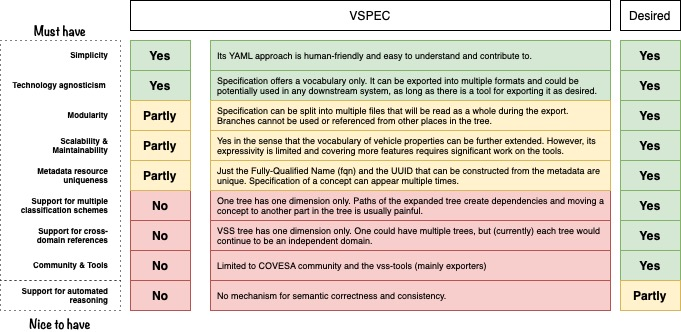
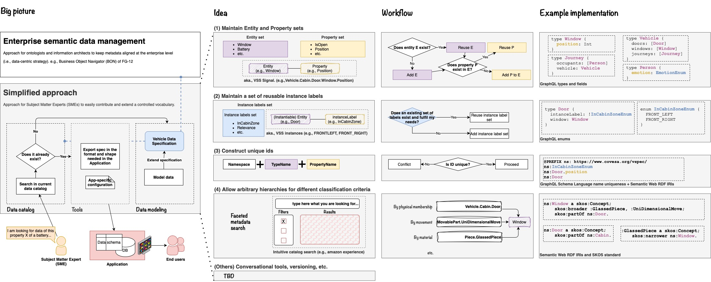

Title here
Summary here
Subject Matter Experts (SMEs) are often not familiar with data modeling, nor are they following best practices to formalize their knowledge. This lack in expertise can be problematic when they are in charge of expanding and maintaining a certain controlled vocabulary that will be used in real systems at the enterprise level.
When it comes to vehicle data, the Vehicle Signal Specification (VSS) has been offering an easy-to-follow approach to enable SMEs contribute to a controlled vocabulary of high-level vehicle properties (e.g., Speed, Acceleration, etc.).
Vehicle Signal Specification (VSS) is a controlled vocabulary for the properties of a car organized in a hierarchical tree. To learn more about VSS, please visit the official documentation page.
The VSS modeling approach has been well received by SMEs who have been extending the list of properties both publicly at the COVESA alliance and internally at BMW.
However, this approach has reached its limits on what one can express with it.
Among the limitations, is the fact that VSS uses a custom file extension .vspec that referes to files written in YAML with a custom syntax.
The language used in vspec, as of December 2024, does not support cross references.
Thus, it is not possible to model multiple inter-connected domains.
If you want to learn more about the current limitations of
VSS, please visit these resources:
The reference mapping between the Vehicle Signal Specification (VSS) and this S2DM approach is documeted in /docs/s2dm_vss_mapping.md.
| Criteria | Requirement |
|---|---|
| Simplicity | Modeling approach is easy to follow. Its representation is not verbose. It is friendly for anyone new to the area. It is easy to add new concepts. |
| Technology agnosticism | Data model can be used with any downstream technology (e.g., by exporting it into multiple schemas). |
| Modularity | Data model can be split into multiple (reusable) small pieces. |
| Scalability & Maintainability | Model can scale up (e.g., concepts are extended). It can be easily maintained (e.g., changes and extensions are possible). |
| Metadata resource uniqueness | Concepts in the data model are uniquely identifiable with future-proof ids (e.g., by the use of International Resource Identifiers (IRIs)). |
| Support for multiple classification schemes | Polyhierarchies are supported to classify the terms in the vocabulary with different classification criteria (i.e., useful for data catalogs). |
| Support for cross-domain references | Multiple cross-referenced domains are supported natively by the language (useful for contextual data). |
| Community & Tools | Data model can be used in multiple up-to-date public tools. Modeling approach is based on a language that is already established in the open community. |

A simplified approach (see figure’s left side) could be the adequate bridge between the ideal enterprise metadata management and the actual use of a domain data model in an application. Specially in cases where SMEs are actively extending a set of data structures that are needed in practice. Also, when alliances or consortiums consist of multiple external stakeholders.
Overall, a SME should be able to intuitively search and find the data of interest via a data catalog. If the desired data is found, tools must allow the export of it into the structure needed in the application. In the case that no existing data matches his needs, simple steps must allow the modeling of the missing concepts. To that end, such a process is proposed with the following ideas:

In an application, most of the value is centered around what one can read or write.
Thus, the most granular structure corresponds always to a certain Property (aka., characteristic, attribute, etc.). For example: the position of the window, the speed of a vehicle, the angle of the steering wheel.
All of them are assotiated to a particular datatype, such as Integer, String, etc.
Then actual values of those properties can have dynamic (i.e., data streams) or static behavior.
Properties belong to some Entity that is of interest for our application. For example:
Window, Vehicle, SteeringWheel, etc.
So, an Entity can contain a collection of properties.
The principal idea here is to maintain a set of entities and their assotiated properties.
In some cases, there are entities that can have multiple instances.
For example, A vehicle might not have one but multiple doors, windows, seats, batteries, tires, etc.
Hence, it becomes useful to avoid repetition in the modeling by allowing the specification of reusable labels.
A list of labels, such as InCabinZone, could contain the options FRONT_LEFT, and FRONT_RIGHT.
These could be used directly to specify a particular Door, Windows, and Seat.
To foster reusability and avoid naming conflicts, a rule set must be enforced. The minimum constraints must be:
namespace (ns) must be unique and future-proof.namespace (ns), the name of an Entity must be unique.namespace (ns), the name of an Enum must be unique.Entity, the name of a Property must be unique.In the case of GraphQL schema language these constraints are supported.
One can concatenate the elements to create International Resource Identifiers (IRIs)
PREFIX ns: <mynamespacehere>
ns:Door
ns:Door.position
ns:Door.isOpenThen, IRIs can be used when defining the schema in the application.
For example, a json schema could look like:
{
"type": "object",
"properties": {
"door": {
"implementedConcept": "ns:Door",
"type": "object",
"properties": {
"position": {"type": "int"},
"isOpen": {"type": "boolean"}
},
}
},
}As the Entity and Property sets grow over time, proper information classification becomes essential.
The most tangible value of this organization is visible in any online shop.
There, a faceted search is the default tool for filtering the available data with specific criteria.
The same principle can be applied here.
For example, the Window entity can be classified by its physical position (Vehicle.Cabin.Door.Window), its principle of movement (MovablePart.UniDimensionalMove.Window), its material (Piece.GlassedPiece.Window), and by other criteria.
The Simple Knowledge Organization System (SKOS) is a well-established standard to achieve such classifications.
The entity and property sets (of idea (1)) can be complemented with an specification of the set of possible operations on them (i.e., interactions or actions). For example:
| Domain | Operation |
|---|---|
Seat |
Get the position of all seats. |
Seat |
Save a seat position to memory. |
Seat |
Control the heating mode of a seat. |
Climate |
Turn on/off the AC. |
Climate |
Set the temperature. |
Climate |
Get the fan speed per zone. |
TODO: Conversational tools, versioning, etc.
Refer to the examples folder.
The following cases require special treatments.
Here’s the markdown summarizing the three cases for your dilemma:
type Vehicle {
speed: Int
}Pros:
Cons:
type Vehicle {
speed: VehicleSpeed
}
type VehicleSpeed {
value: Int
unit: String
timestamp: String
}Pros:
unit or timestamp without breaking the schema.Cons:
speed.type Vehicle {
speed: IntProperty
}
type IntProperty {
value: Int
unit: String
timestamp: String
}Pros:
IntProperty type can be used across multiple fields (e.g., speed, weight, etc.), ensuring consistency and reducing duplication.Cons:
VehicleSpeed.For vehicle-related information, Case 3 with a reusable type like IntProperty is often the best choice, as it balances extensibility, reusability, and clarity.
In GraphQL, enums are typically used to define a set of allowed values for a field. These values are usually represented as strings, such as [FIRST, SECOND, ...]. However, GraphQL enums are not limited to strings conceptually; they can represent any discrete set of values.
If your model defines “allowed” values as integers, like [0, 1, 2, ...], you can still use GraphQL enums to represent them. Internally, GraphQL will treat these enum values as strings in the schema, but you can map them to integers in your application logic.
enum TheAllowedValues {
ZERO
ONE
TWO
}In your application, you can map ZERO to 0, ONE to 1, and so on. This approach allows you to enforce a fixed set of values while maintaining flexibility in how they are interpreted in your code.
GraphQL schema language excels in defining the structure of data models in a clear and understandable way. It provides robust elements such as types, fields within types, nested objects, and enumerations. These features allow for a well-organized and precise representation of data structures. However, it has limitations such as restricted cross-references, where linking fields to other fields directly is not possible.
Let us assume our model has the concepts Window.position, AC.temperature, AC.isOn, Sunroof.position.
In the GraphQL schema language, it is not possible to say that the Person.perceivedTemperature can be modified by acting on these properties.
type Window {
position: Int
}
type AC {
temperature: Float
isOn: Boolean
}
type Sunroof {
position: Int
}
type Person {
perceivedTemperature: Int # I want to say that this property might be affected by acting on the others
pTemp: PTem
}
type PTemp{
affectedByProp: Property
value: String!
}
type Property {
objectName: String!
fieldName: String!
}An alternative would be to define the schema as usual, and then write another instance data file with concrete instance data that represents the connections. For example, that the perceived temperature is affected by Window.position, AC.temperature, AC.isOn, Sunroof.position.
However, the following is possible and supported by the language out of the box by using nested objects:
type Person {
perceivedTemperature: PerceivedTemperature
}
type PerceivedTemperature {
temperature: Int
modifiableBy: [perceivedTemperatureModifiersEnum]
}
enum perceivedTemperatureModifiersEnum {
ns:Window.position
ns:AC.temperature
ns:AC.isOn
ns:Sunroof.position
}Option 3 - using directives
```graphql
directive @affectedBy(object: String!, field: String!) on FIELD_DEFINITION
type Person {
perceivedTemperature: Int
@affectedBy(object: "Window", field: "position")
}
type Window {
position: Int
}